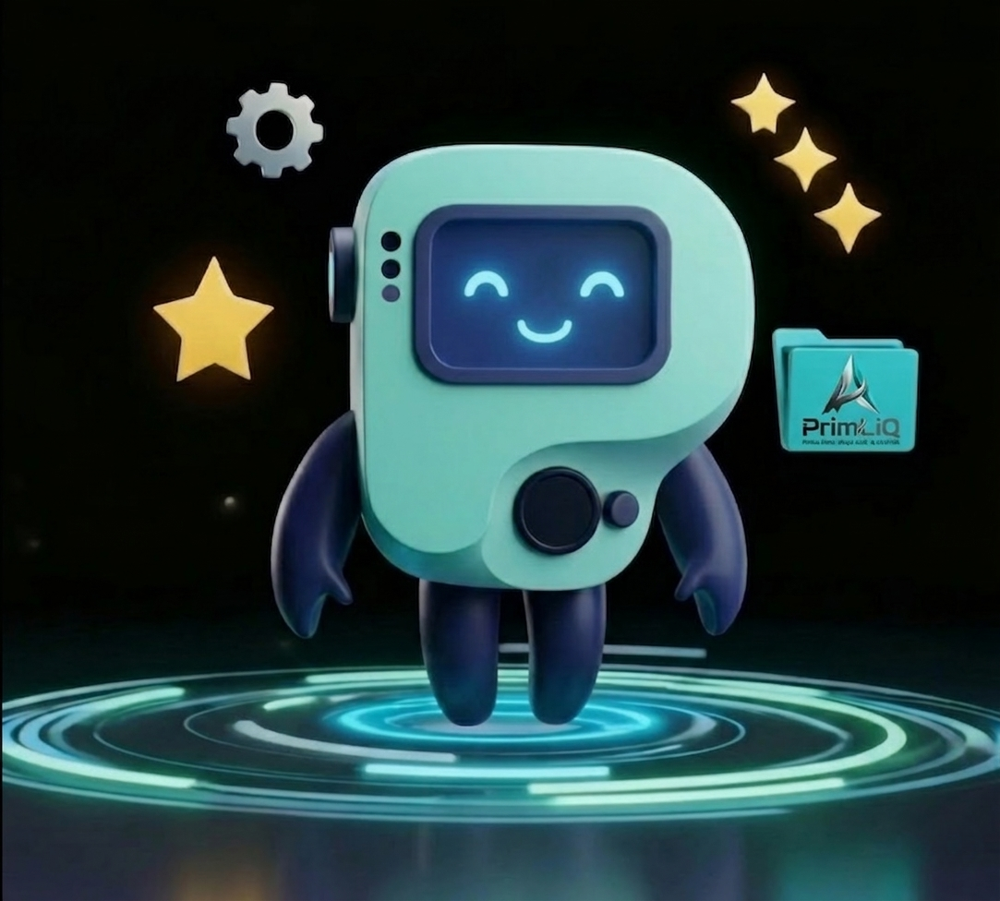

Most individuals are losing a silent war against digital noise. Hidden subscriptions, fragmented focus, and cluttered workspaces are the "ghosts" draining human potential. My objective is to bridge the gap—combining raw instinct with calculated precision.
Modern brilliance is hollow without ancestral drive. I build high-performance systems for those who refuse to settle for average workflows. By combining deep-level Notion architecture with gamified "Hero Quests," I help professionals reclaim their mental landscape and slay the friction that holds them back.
Through PrimLiQ, I provide the tactical tools necessary to dominate the digital age. Whether it's the Prim Zen Dashboard or bespoke automation builds, every asset is designed for one purpose: IQ Executed.